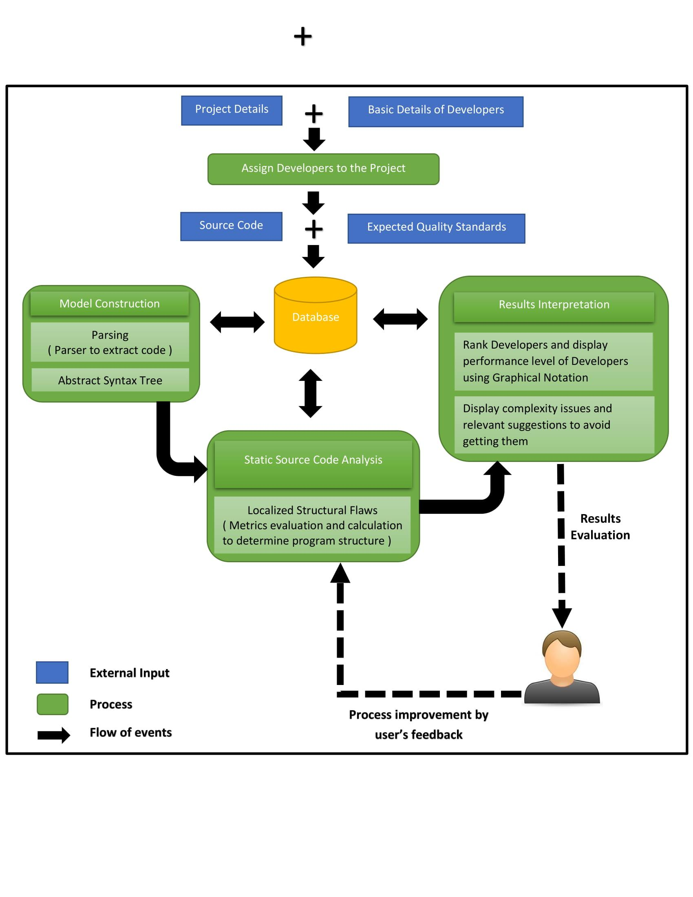

Domain
Background
Measurement is an essential part of any activity. Fundamentally, it allows any onlooker, or even the action doer themselves, to judge the success of the activity. Beyond simply measuring the degree of success, measurement enables comparison between activities, accurate prediction of the success of an activity, accurate assessment of the effort required to conduct an activity and improvement of activities based risk, effort and resources required, to name a few. The same is true for any software project or code. Simply put, “You can’t manage what you can’t measure” . If you were able to measure code, you could judge how large your program is, you could compare it with other programs, you could put a price tag on your code, you could even predict the effort needed to maintain or rewrite your code. The list goes on and on. But none of that means measuring code is easy to do. As the code grows in complexity, so does the degree of difficulty in measuring the code. The first and most fundamental part of any measurement is establishing suitable metrics. Metrics have to be meaningful, easily quantifiable, reliable and accurate. They can range from simple units such as Centimeters and meters to broader metrics such as time taken or “man days”, the sole objective being to make work done measurable. In IT, code has always been difficult to quantify. Initially the sheer volume of code was considered alone (Lines of code) and then expanded on to include variants of this metric such as commented lines of code or blank lines of code . Lines of Code as a metric alone falls short of giving an accurate assessment of the size of a project or code. A code segment with 50 lines of code could still be more complex than a different code with 100 lines of code. In light of this software engineers endeavored to find more meaningful metrics. Eventually, in 1976, Thomas McCabe introduced Cyclomatic Complexity and in 1977, the Halstead Metrics were introduced by Maurice Halstead. While there have been other metrics introduced over the years, these two metric suits remain the cornerstone of all significant code complexity measurement techniques. It should be noted that measuring code is considered as measuring the complexity of code, thus the approach used by both these engineers in developing metrics based on the complexity of code. The reasons to measure how complex a program or code is can be broken down into two main aspects. That is, the degree of difficulty to maintain the code, and the degree of difficulty to test the code. Both maintenance and testing are integral parts of any software life cycle and remain active phases long after the design and implementation phases have completed. Thus, both represent the two most costly phases of any projects life cycle. It goes without saying, the more complex a code is, the harder it is to test and maintain. Having recognized this, many organizations give measuring code complexity a prominent place in the hope of reducing the losses of maintaining and testing complex code. Some of these organizations term this cost as “Technical Debt”, and measure it in “man days” . Technical debt, though hard to quantify, is a useful measure for identifying and reducing bugs, improving the quality and readability of code.
Literature Survey
We have being survey books, scholarly articles, and any other sources relevant to code complexity, static source code analysis and code analysis tools. This section provides a brief description, summary, and critical evaluation of these works in relation to the development of Software productivity measuring tool with team allocation which is being investigated.
Research Gap and Problem
- Program analysis is a substantial process to understand the source code. This needs effective, reliable, and accurate program analysis tools, but these tools may mislead the software developers because they might provide inaccurate measures.
- Motivations behind designing a new tool lay in numerous reports on weaknesses of existing tools both from practice and from academic world.
- Tools usually compute only a selection of possible metrics. They also rarely combine them to gain higher measure quality and also rarely store the code/metrics values to track changes over time.
- nowadays software metric tools are being used for calculation of metric values and for their further processing and analysis. Software metrics and software metric tools are wide research areas and improvements in these fields may bring higher success of software projects in general. However, the state of the art in the field shows that there is no wider acceptance of techniques and therefore still no significant improvements. A new software metrics tool with advanced features would play important role in these improvements.
- Manual reviews began to take up too much time and steering us away from other important tasks.
- Tools rarely display values in ‘user-friendly’ way to a non-specialist (e.g., graphically) and rarely interpret the meaning of computed numerical results and their correlations. They almost never suggest what typical actions should be taken in order to improve the quality of the code.
- Analyzed tools could be divided in two categories. The first category includes tools that calculate only simple metrics as are metrics from LOC family, but for wide set of programming languages. The second category of tools is characterized with wide range of metrics, but limited to a small set of programming languages. There are attempts to bridge the gap between these categories, but without final success. This is the big limitation not only for reasons noted in the introductory section, but also because there are many legacy software systems written in ‘ancient’ languages to which modern metrics tools cannot be applied uniformly.
- Any techniques/tools compute numerical results with no real interpretation of their meaning. The only interpretation of numerical results which can be found is graphical. These results possess little or no value to practitioners who need suggestion or advice how to improve their project based on metrics' results.
Research Objectives
- Objective
- To create a comprehensive tool to analyze and increase the maintainability of the software, measure and effectively display complexity of code using complexity metrics, clearly identifying complex code segments and plan the productivity and maintainability of the software product .
- Objective
- To create a comprehensive tool that will check the quality of a program to industry or company specific quality standards. The standards will be selectable by the user through an interactive interface and developers rank according there productivity.
- Specific Objectives
- Extensive review of existing complexity matrices and established metrics.
- Extensive review of code parsing techniques and the use of grammars.
- Design and construction of a well structured framework of complexity metrics for the analysis of program code in terms of program structure.
- Implementation of a customizable user interface allowing the user to select the quality standards they wish to check their code for adherence of Extraction of raw metric data from the program code through the use of the chosen parser.
- Representation of the calculated metric values in numeric.
- Interpretation of the numerical values into a more user-understandable format.Graphical representation of the interpreted results.
- Measuring the raw data according to the established framework.
- Output based on Exceptions derived from program structure,Control Structures derived from program structure,Inheritance derived from program structure,Coupling derived from program structure.
Methodology
- This section outlines the logical processes and its associated components that will be utilized to develop a Software productivity measuring tool with team allocation which determine the performance of software developers based on their code quality using software metrics, code complexity measuring techniques and user defined quality standards. 
- System Overview.
- This specify the core functionalities of the Software productivity measuring tool with team allocation that will be developed as a desktop application. With Parallel to the development of the tool, a website will be implement as a user reference/guide including facts about how to use the tool, system installation requirements and its features etc. Main functionalities of the Software productivity measuring tool with team allocation includes assigning Software developers to projects, model construction, static source code analysis using algorithms and results interpretation.
- Assigning Software developers to projects
- Assigning Software developers to projects Initially user has to input basic information of software developers working in the company and the project details. The user is capable of assigning suitable software developers as per project requirements by using previously tracked performance level (rank achieved by the software developer) pertained in the system. This process can be automated or customized by the user. Then the user can input the source code and expected quality standards to analyze. Model construction phase will be initiated when user input the source code and expected quality standards.
- Model Construction
- This functionality is concerning about parsing the source code and expected quality standards input by the user to analyze the source code. Code parsing is a part of analysis performed by the compiler where the character stream of the source code breaks up into constituent pieces and imposes a grammatical structure on them. Analysis operates as a sequence of phases such as lexical analyzer, syntax analyzer (parser) and semantic analyzer. [29] The lexical analyzer reads the stream of characters making up the source code and group the characters into meaningful sequences called lexemes. For each lexeme, the lexical analyzer produces as output a token of the form:
- Model Construction
- This functionality is concerning about parsing the source code and expected quality standards input by the user to analyze the source code. Code parsing is a part of analysis performed by the compiler where the character stream of the source code breaks up into constituent pieces and imposes a grammatical structure on them. Analysis operates as a sequence of phases such as lexical analyzer, syntax analyzer (parser) and semantic analyzer. [29] The lexical analyzer reads the stream of characters making up the source code and group the characters into meaningful sequences called lexemes. For each lexeme, the lexical analyzer produces as output a token of the form:
- Static source code analysis
- After parsing the code and generating an abstract syntax tree, static source code analysis is carry out by evaluation of complexity metrics based on program structure. We are focusing on following object oriented concepts in complexity metrics evaluation.
- Control structures
- Number of iterations in iterative control structure (Nesting level)
- Types of basic control structures
- Line of Code (LOC)
- LOC: count lines of code
- CLOC: count comment lines of code
- Exception handling
- Operators and operands
- Inheritance
- Memory consumption
- Coupling
Technology Used